某全国紙の企画関連で、急遽、麻雀博物館で打ち合わせが行われることになった。そこで10月10日、ひさしぶりに麻雀博物館へ。二日間にわたった打ち合わせのあと、新たに収集された珍奇牌も手にとってたっぷり拝見。
ぶじ終了したが、せっかく関東まで出かけたのにまっすぐ帰ったのではもったいない。そこで同行した人と、運良く連絡のついた東京組の２人、計４人で噂に聞くコスプレ雀荘なるものに行ってきた。(^-^；
http://littlemsn.net/
むさい中年男が４人そろって入店すると、「モ○」という名札をつけた看護婦姿のお姉さんが迎えてくれた。
「ご新規さんですか？」
「はい、そうです」
するとテーブルでさっそくシステムの説明。
「入店料として最初に５百円いただきます。ゲーム料は....」
「あ、インターネットを見ましたので、だいたい承知してます」
「そうですか。それではルールの方を。東風戦でアリアリです。普通と少し違っているところは....それから....」
２，３聞いたところで
「σ(-_-)はもう年なので、いま一通り聞いてもすぐ忘れてしまいます。そいで分からないことがあったら途中で聞くと云うことで」と言ったら、「はい、それでもいいですよ」と優しい返事。 すると同行の知人が、「どうせこのハゲオヤジ、ルールのことなんにも分からないから」おひ、そこまで云うか...
最後に白い名札のようなものを渡された。なにかと思ったら、それにマジックで名前を書いてほしいという。う〜ん、インターネットじゃないので、別人28号とか書いたんではヘンなオヤジと思われそう。そこでおとなしく浅見了と書いた（あとから聞いたら、どんな風でも良かったみたい）。
「誰かご指名がありますか」と聞かれたので
「いや、初めてなので....よろしければあなたで(^人^)オネガイ!!したい....」
「はい、わかりました」
そいでとりあえず１人抜けて、３人が千円づつ払ってゲームを開始。そのゲームはσ(-_-)が起家、モモ子さんは北家(上家)だった。
東の１局、１巡してσ(-_-)の最初のツモ。（え、なんでσ(-_-)が下ヅモなんだ）。見ると南家の手牌が１枚足りない。配牌の最後の１枚を取り忘れ。(笑) 山を指で示しながら「取り忘れ」と小声で言うと下家は一瞬 “えっ ”という顔をしたが、すぐ気がついて“ ギャー ”。対面のN君も気がついて笑ってる。しかし１巡回っていては、どうしようもない。そもそも、下家はさきほどハゲオヤジと抜かしたヤツだ。そいで指でそっと合図して、そのまま進行することにした。
だいたい取り忘れなんてのは、配牌がいいときにやる。（たぶんとってもいい手だろう）と思っていたら、南家は２巡目から の連打。続いて の連打。続いて    。(爆笑) 。(爆笑)
σ(-_-)と対面は大笑いしていたが、たまたまモ○さんには分からなかったようで。
「え、え、なんで....なんであんな風に切ってるの？」
そいで、「うん、きっと索子のチンイツをやっているんだろ」
「だって だって....あんなに出来てるメンツ、ぜんぶ切って....」
「いいの、あんなのアガれっこないから無視してれば」
「ほんとに？....」
＃混乱させたままでは申し訳ないので、その局が終わってからワケは話した。
なんて云ってるうちにホイと７枚めを切ったら、モ○さんから
「捨て牌は６枚でお願いします」と怒られた。(^-^；
「ごめん、いつも７枚で切ってるもんで」←名古屋弁丸出し。(^-^；
「あ、そうなんですか」
「次からちゃんと６枚で切るようにします」なんて云っているうちに、その場は流局。というか、実は最後の方の で千点オールをツモアガっていた。 で千点オールをツモアガっていた。
 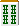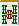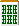 ツモ 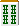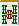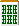 ツモ
タンヤオトイトイのカリテンだったところへのツモ。どうしてもトイトイをやりたかったのでツモ切った。結局 テンパイ料だけもらって、１本場。
その１本場。
前局、どうでもいい手をアガらなかったので麻雀の神様がほめてくれたのか、タンピン系の軽い手。５巡目にリーチをかけて、数巡後、あっさり４千点オール。
２本場。
 ダブが２枚、 ダブが２枚、   が１枚づつ。あとは が１枚づつ。あとは  とか とか とか とか  などというバラバラした手。チャンタかホンイツでもやるかと思いながら、と切り出す。もちろん赤牌が来ても切るつもり。＃赤牌はチップなしの１枚１翻。つまりドラと同じ。 などというバラバラした手。チャンタかホンイツでもやるかと思いながら、と切り出す。もちろん赤牌が来ても切るつもり。＃赤牌はチップなしの１枚１翻。つまりドラと同じ。
そうこうしているうちに が２枚になった。そこで ダブをポン、 をポンしたあと、南家から5,800をゲット。そしたらますますツいてきて、３本場はタンピン系の好配牌。そこで第１打牌にドラの を切った。すると南家がポン。そんなもん無視して進めていると、６巡目に を切った。すると南家がポン。そんなもん無視して進めていると、６巡目に   マチでテンパイ。 マチでテンパイ。
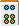
即リーしたら、一発でをツモって、６千オール。いやぁ、ツキとはおそろしい。
４本場もタンピン系。リャンペーコでもやろうとガメっていたら、中盤になって対面が を連続してポン。せっかくリャンペーのイーシャンテンだったが、これは大変。もったいないけどをポンして、タンヤオドラ２でテンパった。 を連続してポン。せっかくリャンペーのイーシャンテンだったが、これは大変。もったいないけどをポンして、タンヤオドラ２でテンパった。
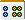
すぐ南家の でロン、5,800。そしたら南家がちょうどハコって、東１局でゲーム終了。するとみんなから「700円も払って東の１局で終わるとは」と非難の嵐。しかし５回もやったんだから東風戦１回分と思うんだけど（^-^； でロン、5,800。そしたら南家がちょうどハコって、東１局でゲーム終了。するとみんなから「700円も払って東の１局で終わるとは」と非難の嵐。しかし５回もやったんだから東風戦１回分と思うんだけど（^-^；
そこで同行のメンバーが１人入れ替わってもう１ゲームすることにした。するとモ○さんが、「あの....」
デートのお誘いかと思ったら、「待ってみえるお客さんがいるので、私はそちらのお客さんと....そこでお客さんには少し待ってもらって、別の小鬼さんの手が空いたらその人と....」
「なるほど、ではそういうことで....」と話していたら、男性スタッフが出てきて、「モ○さん、このまま打ってください」
「えっ、いいんですか....」
そんなやりとりがあったあと、また千円づつ払って２回目開始。今度はモ○さんが対面で始まった。ところが次のゲーム。なんだか毎回、万子のホンイツとかチンイツもようの配牌ばっかり。おまけに必ずとか 入りの余分なメンツが一組あるという不思議な手。 入りの余分なメンツが一組あるという不思議な手。
しょうがないから、 とあれば から、 とあれば から切った。決してふざけてやっているのではない。単にホンイツやチンイツと別の種類の赤牌だからというだけのこと。ところが上家はチャンタ狙い。とうぜん上家もやを切る。もちろん偶然の一致なんだけど、あんまり赤牌が出るもんだから、モ○さんが「わたし、こんな麻雀、はじめて.....」 いや、まったくご迷惑をおかけして....m(_ _)m とあれば から切った。決してふざけてやっているのではない。単にホンイツやチンイツと別の種類の赤牌だからというだけのこと。ところが上家はチャンタ狙い。とうぜん上家もやを切る。もちろん偶然の一致なんだけど、あんまり赤牌が出るもんだから、モ○さんが「わたし、こんな麻雀、はじめて.....」 いや、まったくご迷惑をおかけして....m(_ _)m
しかしツモがイマイチで、メンホンはテンパイしてもアガれない。メンチンはイーシャン止まり。そんなうちにσ(-_-)がモ○さんのリーチにで子満を放銃。
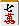
やがてモ○さんトップめでオーラス。σ(-_-)は持ち点１万点ほどしかない。いじくり回していたら、こんな手になった。
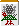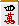
サンシキ狙いなので、かツモなら 切り。 切り。 か引きならなら か引きならなら 切り。いずれもツモ専リーチと思っていたら、引いたのが。とうぜん切りというとこだけど、なんだか急に気が変わって 切り。いずれもツモ専リーチと思っていたら、引いたのが。とうぜん切りというとこだけど、なんだか急に気が変わって 切りのリーチ。 切りのリーチ。
見ていた同行者が、「どうせ ツモ専なら、なんで を切らない？」と耳元でブツブツ。(^-^； なあに、人間というのは思いもかけない行動を取るもんだよ。(^-^；
最後のツモ牌（ハイテイではない）でまたをツモったがツモ切り。結局流れた。そして次の局、ラス親の上家が頑張リ、レンチャンして逆転トップで終了した。
とにかく大変楽しいひとときでした。いつのことか分からないけど、上京したおりには、またおじゃまさせてください。
|
)
){kind=link}
){kind=link}
){kind=link}
){kind=link}
){kind=link}
){kind=link}
){kind=link}
){kind=link}
){kind=link}
){kind=link}
){kind=link}
){kind=link}
){kind=link}
){kind=link}
){kind=link}
){kind=link}